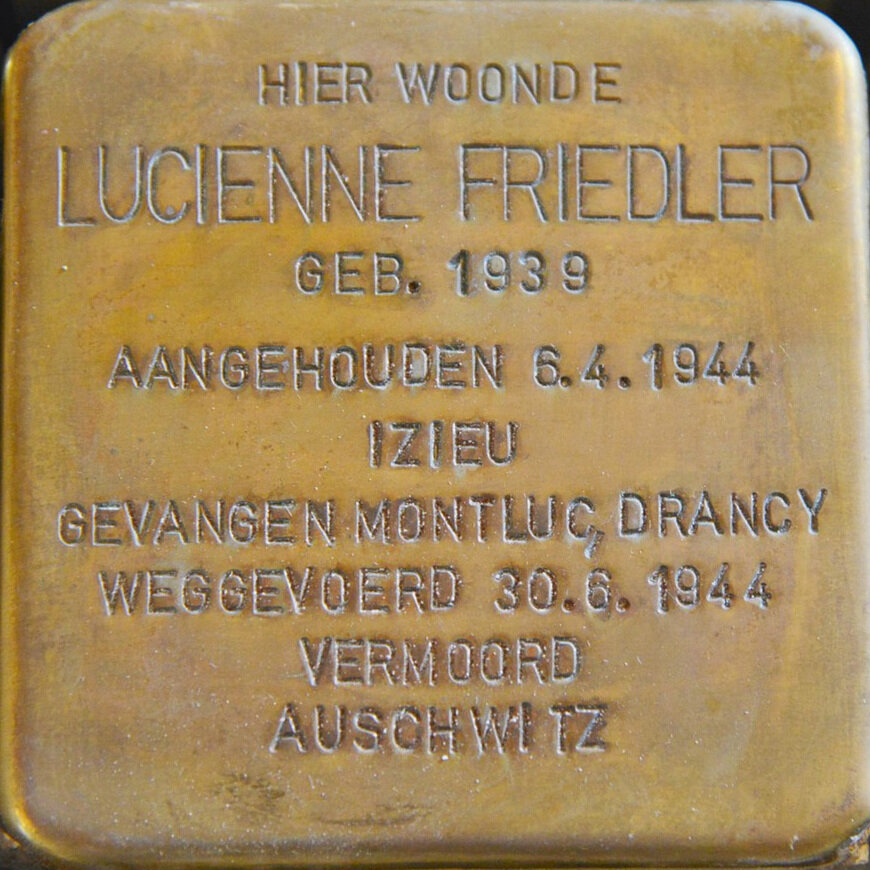

Portrait d’archive
Lucienne Friedler
Lucienne FRIEDLER
Nom : FRIEDLER
Prénom(s) : Lucienne
Date naissance : 18/02/1939
Âge (ans) : 5
Lieu naissance : Berchem (Anvers)
Pays ou département : Belgique
Lieu rassemblement : Lyon
Dernière adresse : ?
Ville : Izieu (Ain)
Code postal : 01300
N° Convoi : 76
Date déportation : 30/06/1944
Informations diverses : Fille de Isidor Friedler (14/05/1915 à Granvenhague, La Haye, Pays-Bas), électricien et de Mina Friedler née Kunstler (20/02/1912 à Turka, Ivano-Frankivsk, Ukraine), mariés en 1936. Née le 18 février 1939, à Berchem (Anvers, Belgique), âgée de 5 ans : arrivée à Izieu, le 22 novembre 1943. Sa mère Mina Friedler est monitrice à la colonie d’Izieu. Aucune photo d'elle n'a été retrouvée. Arrêtées le 06/04/1944 à Izieu et transférées à Drancy le 08/04/1944. Elle est déportée par le convoi no 76, du 30 juin 1944, du camp de Drancy vers Auschwitz, en même temps que sa mère, âgée de 50 ans. elle meurt à Auschwitz le 5 juillet 1944.
Son père Isidore Friedler déporté individuellement à Auschwitz pendant l'été 1943 à partir de Compiègne. Il fut transféré à Mauthausen le 16/02/1945 puis libéré du camp de Gusen (Autriche) le 08/05/1945. Il a survécu et s’est installé en Israël. Ni Mina ni Lucienne ne sont revenues. Il ne lui reste même pas une photo de sa fille.
Friedler (Lucienne), née le 18 février 1939 à Berchem (Belgique), décédée le 5 juillet 1944 à Auschwitz (Pologne) et non le 18 avril 1944 à Auschwitz (Pologne).
Friedler, née Kunstler (Mina) le 20 février 1912 à Turka (Pologne), décédée le 5 juillet 1944 à Auschwitz (Pologne).
Lieu de déportation : Auschwitz
Lieu de départ : Drancy
Nombre total de déporté·e·s du convoi : 1100
Gazé·e·s à l'arrivée : 479 (43,5 %)
Survivant·e·s en 1945 : 182 (16,5 %)